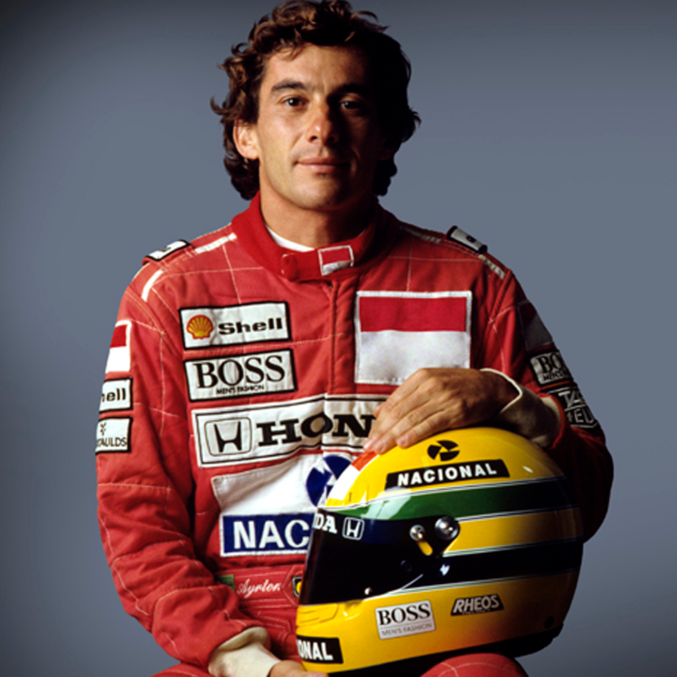

Ayrton Senna - Lenda do Automobilismo

Início da Vida
Ayrton Senna da Silva nasceu em 21 de março de 1960 em São Paulo, Brasil. Desde cedo demonstrou talento para pilotagem, começando com karts ainda na infância.
Números e títulos antes da Fórmula 1
Bicampeão paulista de Kart: 1974; 1976. Tricampeão brasileiro de Kart: 1978–1980. Bicampeão sul-americano de Kart: 1977; 1980. Campeão de Fórmula Ford 1600: 1981. Fórmula Ford 2000: 1982. Fórmula 3 britânica: 1983.
Carreira na Fórmula 1
Senna estreou na Fórmula 1 em 1984 pela equipe Toleman, onde ficou conhecido como o melhor piloto na chuva, após chegar em segundo lugar na etapa do Grande Prêmio de Mônaco de 1984, com um carro que geralmente largava nas últimas posições do grid. No entanto, foi com a Lotus, e posteriormente com a McLaren, que se consagrou como um dos maiores pilotos da história. Venceu três campeonatos mundiais (1988, 1990 e 1991).
Legado e Morte
Em 1º de maio de 1994, Senna faleceu tragicamente durante o Grande Prêmio de San Marino, em Ímola. Sua morte chocou o mundo e levou a mudanças significativas na segurança do esporte. Até hoje, é lembrado como um herói nacional e ícone do automobilismo.
Curiosidades
Além de suas habilidades nas pistas, Senna era conhecido por seu patriotismo, espiritualidade e ações filantrópicas, muitas delas através do Instituto Ayrton Senna, fundado pela sua irmã Viviane Senna após sua morte para melhorar a educação no Brasil.